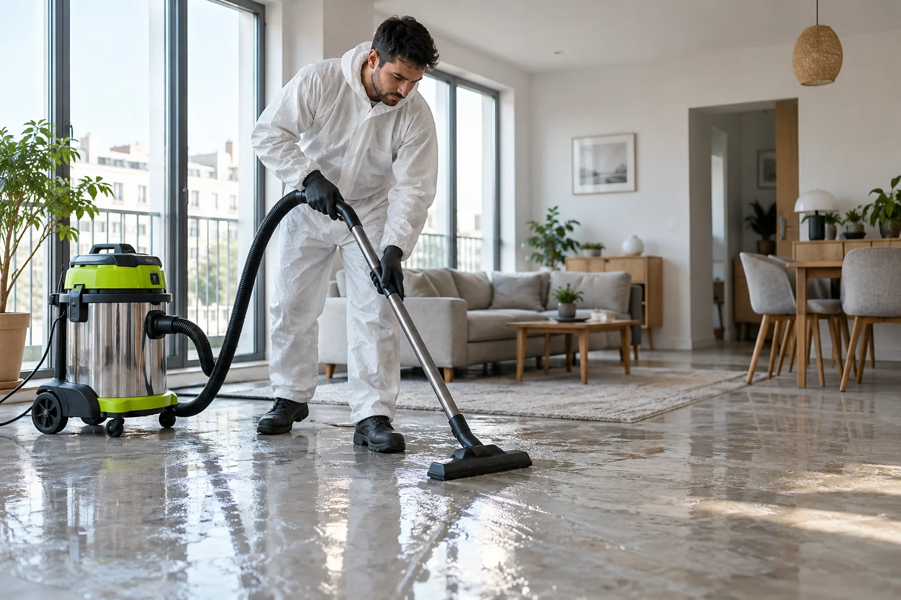

Débarras logement insalubre à Versailles
Le logement à Versailles (78000)
Versailles possède de nombreux immeubles de pierre, des hôtels particuliers divisés en appartements et des maisons avec jardin. Les quartiers Notre-Dame et Saint-Louis sont denses, Montreuil et Satory plus résidentiels ou plus récents.
Débarras logement insalubre à Versailles : les situations rencontrées
Les appartements anciens de Versailles, parfois divisés en plusieurs lots, peuvent présenter humidité, moisissures et sols dégradés après des années sans entretien.
Accès et organisation à Versailles
Le stationnement est réglementé et les rues proches du château sont très fréquentées. Nous demandons les règles de la copropriété et le jour des encombrants avant de fixer la date.
Comment se déroule l’intervention
Nous commençons par une visite gratuite pour identifier les causes visibles : humidité, moisissures, déchets, nuisibles, dégâts des eaux. Le devis écrit précise ce qui relève du nettoyage et de la désinfection, et ce qui nécessite l’intervention d’un artisan.
Quartiers desservis à Versailles
Nous intervenons dans toute la commune, notamment dans les secteurs suivants : Notre-Dame, Saint-Louis, Montreuil et Satory. Pour un nettoyage appartement insalubre ou un nettoyage maison insalubre dans une commune voisine de Versailles, appelez-nous avec l’adresse : nous confirmons la zone et le délai au téléphone.

Prix du débarras logement insalubre à Versailles
Un appartement légèrement humide et une maison fermée depuis des années demandent des moyens très différents. La visite gratuite permet d’établir un prix précis.